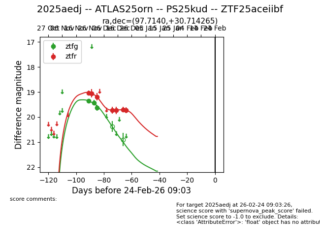
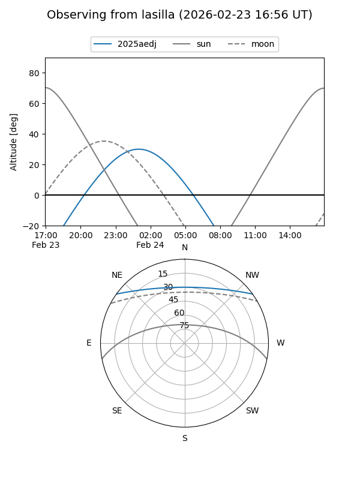
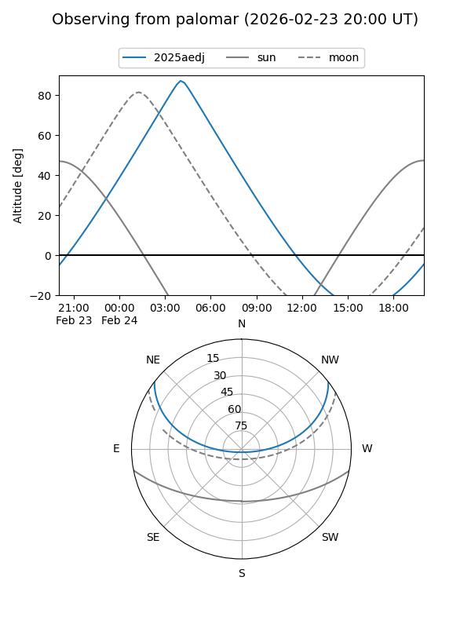
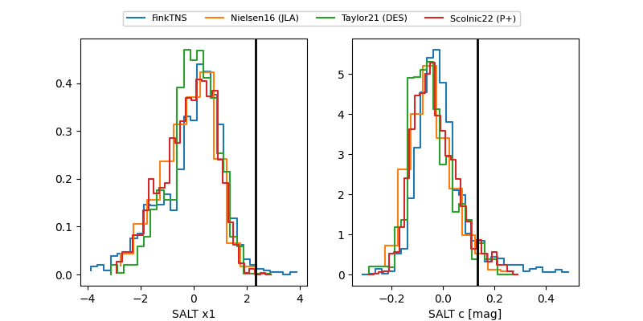

2025aedj
Target 2025aedj at 2025-12-20 08:39
Aliases and brokers:
FINK: fink-portal.org/ZTF25aceiibf
Lasair: lasair-ztf.lsst.ac.uk/objects/ZTF25aceiibf
ALeRCE: alerce.online/object/ZTF25aceiibf
TNS: wis-tns.org/object/2025aedj
YSE: ziggy.ucolick.org/yse/transient_detail/2025aedj
alt names
ZTF25aceiibf (ztf,fink_ztf)
2025aedj (tns,yse)
ATLAS25orn (atlas)
Coordinates:
equatorial (ra, dec) = 97.7140,+30.71427
equatorial (HMS+DMS) = 06:30:51.36,+30:42:51.35
galactic (l, b) = (183.1651,+9.45512)
Flags:
Photometry:
last ztfg=19.62, ztfr=19.70
3 ztfg, 6 ztfr detections
Lightcurve

Visibility


Additional plots
